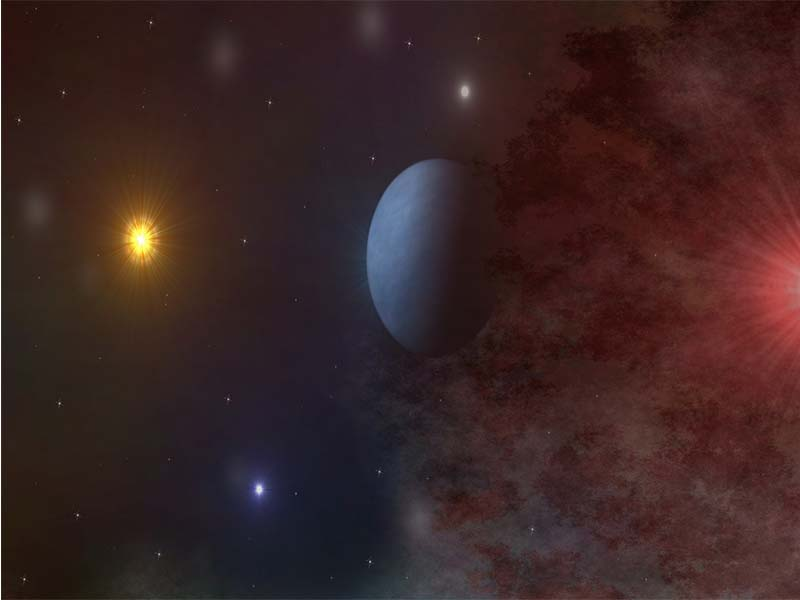

El Sol (del latín sol, solis, a su vez de la raíz protoindoeuropea sauel- brillar)4 es una estrella de tipo-G de la secuencia principal y clase de luminosidad V que se encuentra en el centro del sistema solar y constituye la mayor fuente de radiación electromagnética de este sistema planetario.5 Es una bola esférica casi perfecta de plasma, con un movimiento convectivo interno que genera un campo magnético a través de un proceso de dinamo. Cerca de tres cuartas partes de la masa del Sol constan de hidrógeno; el resto es principalmente helio, con cantidades mucho más pequeñas de elementos, incluyendo el oxígeno, carbono, neón y hierro.
Se formó hace aproximadamente 4600 millones de años a partir del colapso gravitacional de la materia dentro de una región de una gran nube molecular. La mayor parte de esta materia se acumuló en el centro, mientras que el resto se aplanó en un disco en órbita que se convirtió en el sistema solar. La masa central se volvió cada vez más densa y caliente, dando lugar con el tiempo al inicio de la fusión nuclear en su núcleo. Se cree que casi todas las estrellas se forman por este proceso. El Sol es más o menos de edad intermedia y no ha cambiado drásticamente desde hace más de cuatro mil millones de años, y seguirá siendo bastante estable durante otros cinco mil millones de años más. Sin embargo, después de que la fusión del hidrógeno en su núcleo se haya detenido, el Sol sufrirá cambios severos y se convertirá en una gigante roja. Se estima que el Sol se volverá lo suficientemente grande como para engullir las órbitas actuales de Mercurio, Venus y posiblemente la Tierra.
La Tierra y otros cuerpos (incluidos otros planetas, asteroides, meteoroides, cometas y polvo) orbitan alrededor del Sol.5 Por sí solo, representa alrededor del 99,86 % de la masa del sistema solar.6 La distancia media del Sol a la Tierra fue definida exactamente por la Unión Astronómica Internacional en 149 597 870 700 metros7 (aproximadamente 150 millones de kilómetros). Su luz recorre esta distancia en 8 minutos y 19 segundos.
La energía del Sol, en forma de luz solar, sustenta a casi todas las formas de vida en la Tierra a través de la fotosíntesis, y determina el clima de la Tierra y la meteorología.
Es la estrella del sistema planetario en el que se encuentra la Tierra; por lo tanto, es el astro con mayor brillo aparente. Su visibilidad en el cielo local determina, respectivamente, el día y la noche en diferentes regiones de diferentes planetas. En la Tierra, la energía radiada por el Sol es aprovechada por los seres fotosintéticos que constituyen la base de la cadena trófica, siendo así la principal fuente de energía de la vida. También aporta la energía que mantiene en funcionamiento los procesos climáticos.
El Sol es una estrella que se encuentra en la fase denominada secuencia principal, con un tipo espectral G2 y clase de luminosidad V, por tanto, también es denominada como enana amarilla, se formó entre 4567,9 y 4570,1 millones de años y permanecerá en la secuencia principal aproximadamente 5000 millones de años más. El Sol, junto con todos los cuerpos celestes que orbitan a su alrededor, incluida la Tierra, forman el sistema solar.
A pesar de ser una estrella mediana, es la única cuya forma se puede apreciar a simple vista, con un diámetro angular de 32′ 35″ de arco en el perihelio y 31′ 31″ en el afelio, lo que da un diámetro medio de 32′ 03″. La combinación de tamaños y distancias del Sol y la Luna son tales que se ven, aproximadamente, con el mismo tamaño aparente en el cielo. Esto permite una amplia gama de eclipses solares distintos (totales, anulares o parciales).
El vasto efecto del Sol sobre la Tierra ha sido reconocido desde tiempos prehistóricos y ha sido considerado por algunas culturas como una deidad. El movimiento de la Tierra alrededor del Sol es la base del calendario solar, el cual es el calendario predominante en uso hoy en día.
La disciplina científica que se encarga del estudio del Sol en su totalidad es la física solar.
Carslaw KS, Harrison RG, Kirkby J: "Cosmic Rays, Clouds, and Climate". Science. 2002;298:1732-37.
Kasting, JF, Ackerman TP: "Climatic Consequences of Very High Carbon Dioxide Levels in the Earth’s Early Atmosphere". Science. 1986;234:1383-85.
Priest, Eric Ronald: Solar Magnetohydrodynamics. Dordrecht: D. Reidel Pub., 1982, p. 206-245. ISBN 90-277-1374-X
Schlattl H: "Three-flavor oscillation solutions for the solar neutrino problem", Physical Review D. 2001;64(1).
{kind=link}